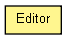

org.apache.wiki.ui
Class Editor
java.lang.Object
 org.apache.wiki.ui.Editor
org.apache.wiki.ui.Editor
public class Editor
- extends Object

Describes an editor.
- Since:
- 2.4.12
Editor
public Editor(WikiContext wikiContext,
String editorName)
getName
public String getName()
getURL
public String getURL()
- Deprecated.
isSelected
public String isSelected()
- Convinience method which returns XHTML for an option element.
- Returns:
- "selected='selected'", if this editor is selected.
isSelected
public String isSelected(String ifSelected)
isSelected
public String isSelected(String ifSelected,
String ifNotSelected)
toString
public String toString()
- Overrides:
toString in class Object
Copyright © {inceptionYear}-2014 The Apache Software Foundation. All rights reserved.